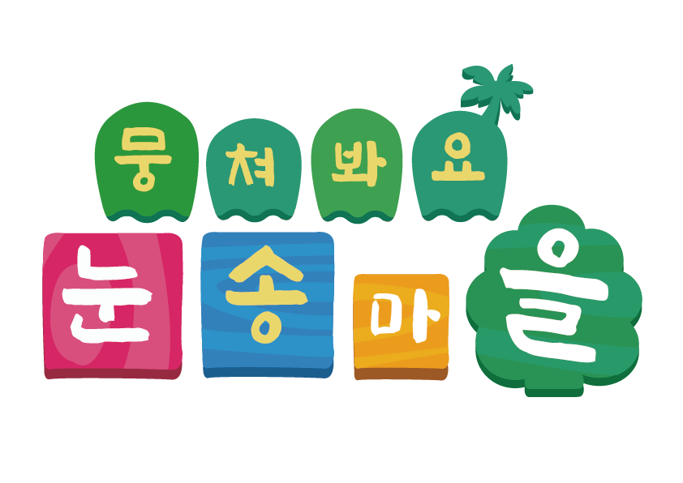

Q1. 우연히 초대장을 연 당신은
순식간에 눈송마을로 빨려 들어간다.
눈송마을에서 축제가 열리는 9월 6,7일
이틀 간 축제에 참가하게 된 당신!
이왕 갔는데 나는 축제를..

눈송마을 속 내가 어떤 유형인지 알고싶다면?
✌지/금/당/장/테/스/트/하/기&✌
문의사항 및 오류접수
smwu2022festival@gmail.com
본 사이트는 모바일에서만 지원 가능합니다.
본 사이트는 완도희망체, 강원교육튼튼체
및 MICE고딕체를 사용하였습니다.